Data Sources
Data sources is the category where the user sets, creates a data source connection. There are six options to choose from, a JDBC driver, file, file transfer protocol(FTP), Google Cloud Storage (GCS), Amazon Simple Storage Service (Amazon S3) and Microsoft Azure. The supported database servers are: MySQL, MS SQL Server, Postgres, Oracle, BigQuery, and Generic driver. To create a new data source connection the user needs to fill in the connection name, description, a host and a port for the server, database name for the utilized database server with a username and password, define a driver class name and upload a JDBC driver. All these fields are saved and the newly created data source connection is shown in a list of Data source connections, where there are options to edit and delete it. For a new file or FTP data source connection the user need to fill in the connection name, choose a URI of the file, and from the dropdown choose CSV or AVRO which should be same as the type of the file. The same applies for the other connections that are left with some small differences for example, for GCS data source connection the user must add the Service Account, for Amazon S3 the user must provide the Access Key ID and Secret Access Key and for Microsoft Azure the user should fill Account Name, Container Name and SAS Token.
Example
Create a data source
To create a data source, the user must click on Data Source tab from the menu on the left.
If there are no data sources configured, the user clicks on Add Data Source button to add a new data source.

When Add Data Source button is clicked, a new screen with fifteen options to choose from for data source connection is shown.
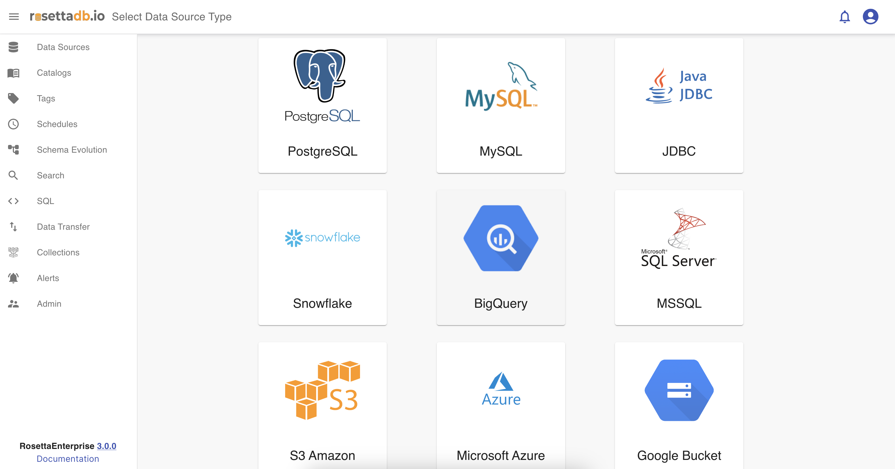
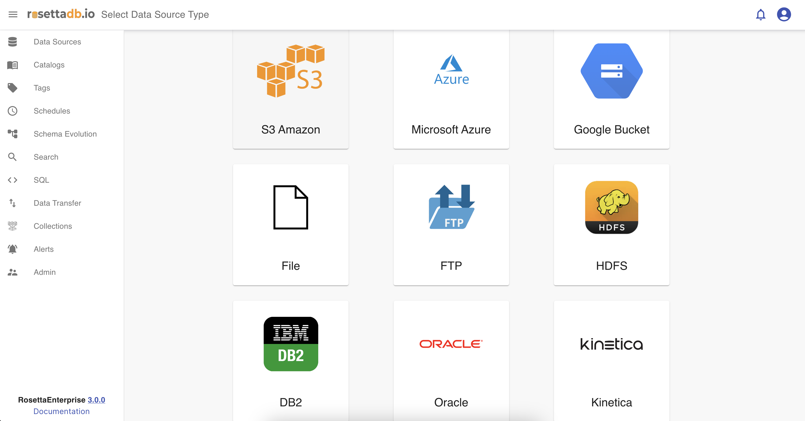
JDBC connection
If the user chooses JDBC connection type, must fill some fields such as , connection name that should be unique, a description, hostname and port based on the DB server chosen from the dropdown list, configured username and password for the data source, the JDBC driver should be uploaded and JDBC connection string should be given in a format jdbc:sqlserver://{host}[:{port}][databasename={database}].
When the user fills all the fields the connection can be tested by clicking the button Test that will turn green if the connection is correct, and turn red if the connection is wrong.
After clicking Save button all the input is saved and the data source is ready for use.
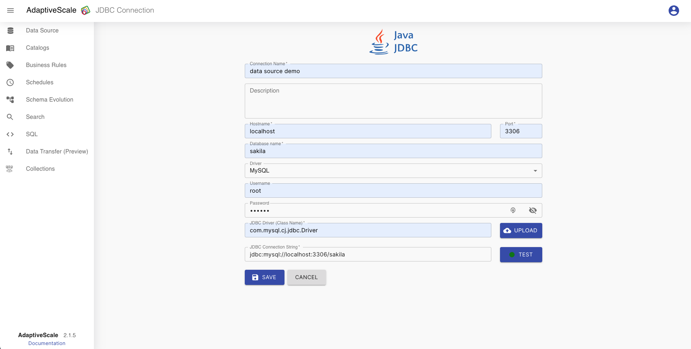
File connection
If the user chooses file connection type the user needs to fill a name, choose a type of the file, csv, avro or parquet, and fill the URI of the file.
When the user fills all the fields the connection can be tested by clicking the button Test that will turn green if the connection is correct, and turn red if the connection is wrong.
After clicking Save button all the input is saved and the data source is ready for use.
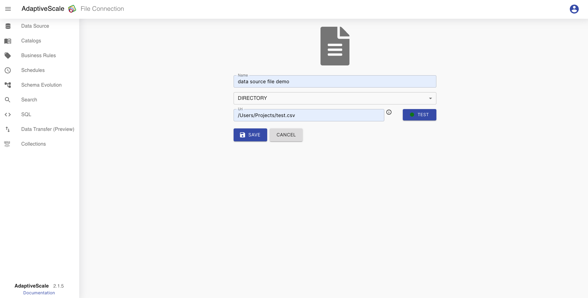
FTP connection
If the user chooses FTP connection type it needs to fill a name, choose a type, a directory, csv, avro or parquet, and fill the URI of the file starting with file://. In order to explore what files are inside the directory by clicking on Explore the user must specify the URI. If it clicks on one of the files of that directory, the URI will be re written automatically.
After clicking Save button all the input is saved and the data source is ready for use.
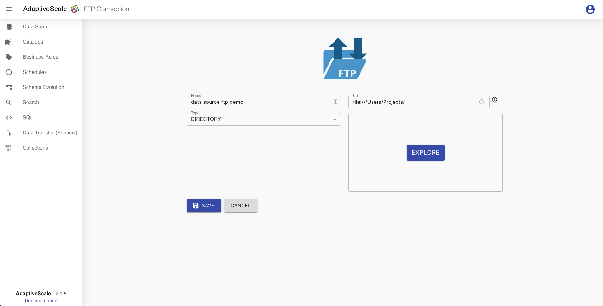
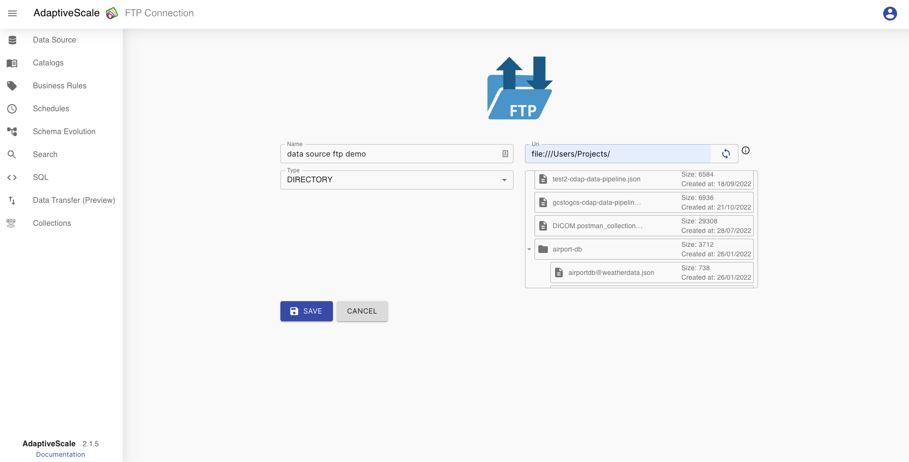
Google Bucket connection
If the user chooses Google Bucket connection type the user needs to fill a name, choose a type, a directory, csv, avro or parquet, write the service account key and fill the URI of the file starting with gs://. The user can explore what files are inside the bucket by clicking on Explore, even without filling the URI . If it clicks on one of the files or directories of that bucket, the URI will be filled or re written automatically.
After clicking Save button all the input is saved and the data source is ready for use.
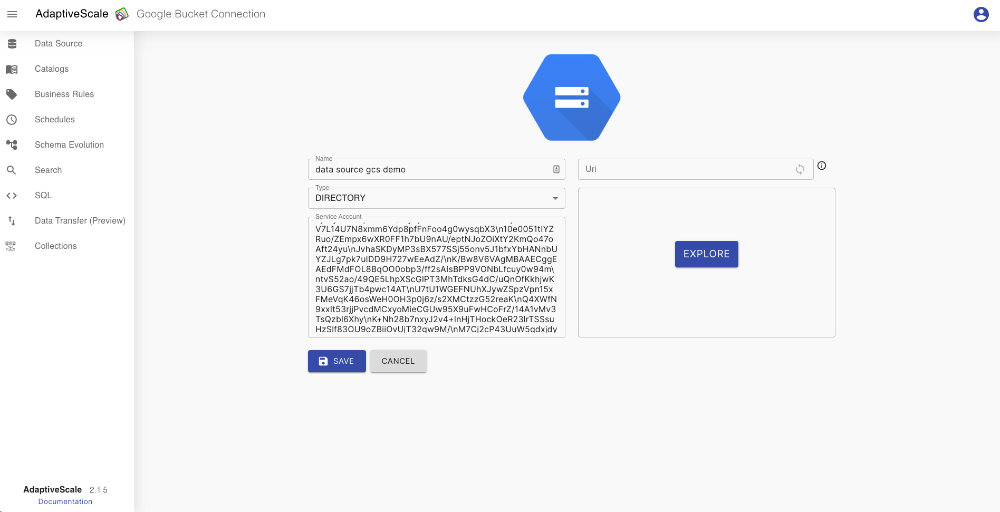
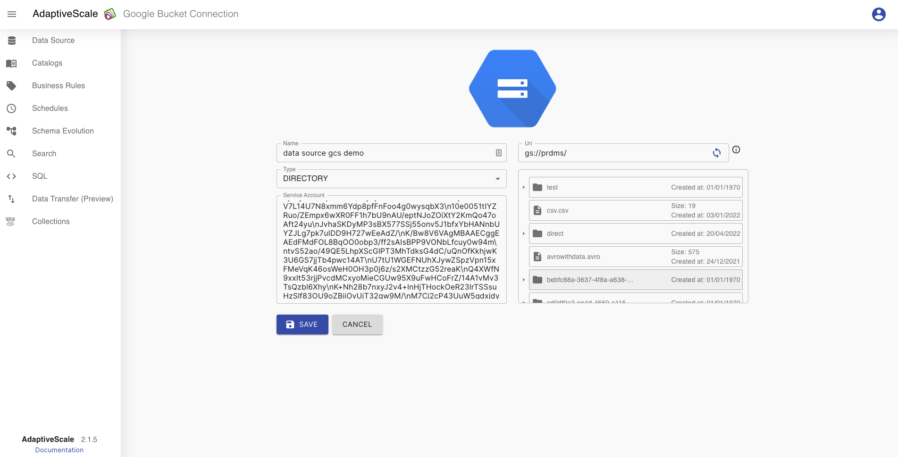
S3 Amazon connection
If the user chooses S3 Amazon connection type the user needs to fill a name, choose a schema type of the file, csv, avro or parquet, provide access key ID and secret access key and fill the URI of the file starting with s3a://. The user can explore what files are inside the bucket by clicking on Explore, even without filling the URI . If it clicks on one of the files or directories of that bucket, the URI will be filled or re written automatically.
After clicking Save button all the input is saved and the data source is ready for use.
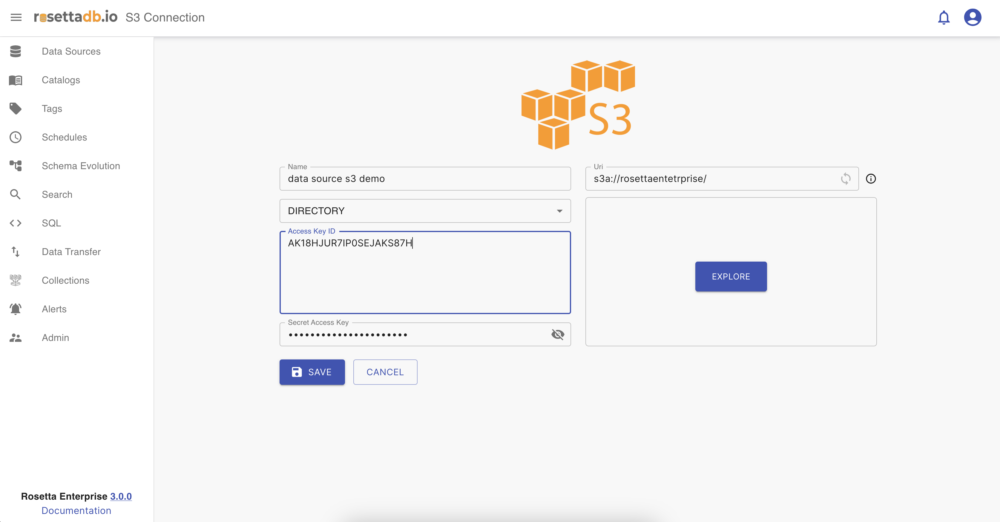

Microsoft Azure connection
If the user chooses Microsoft Azure connection type the user needs to fill a name, choose a schema type of the file, csv, avro or parquet, provide Account name, Container name and SAS token and fill the URI of the file starting with wasbs://. The user can explore what files are inside the bucket by clicking on Explore, even without filling the URI . If it clicks on one of the files or directories of that bucket, the URI will be filled or re written automatically.
After clicking Save button all the input is saved and the data source is ready for use.
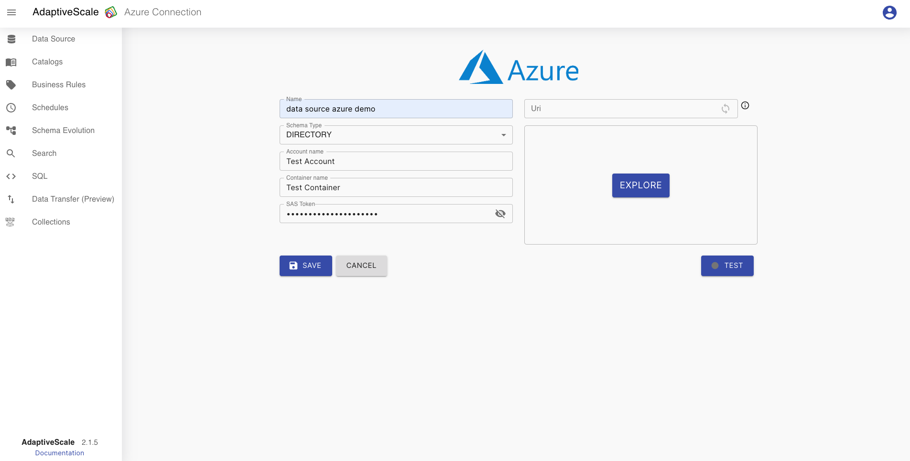
HDFS connection
If the user chooses HDFS connection type it needs to fill a name, choose a type, a directory, csv, avro or parquet, and fill the URI of the file starting with file://. In order to explore what files are inside the directory by clicking on Explore the user must specify the URI. If it clicks on one of the files of that directory, the URI will be re written automatically.
When the user fills all the fields the connection can be tested by clicking the button Test that will turn green if the connection is correct, and turn red if the connection is wrong.
After clicking Save button all the input is saved and the data source is ready for use.
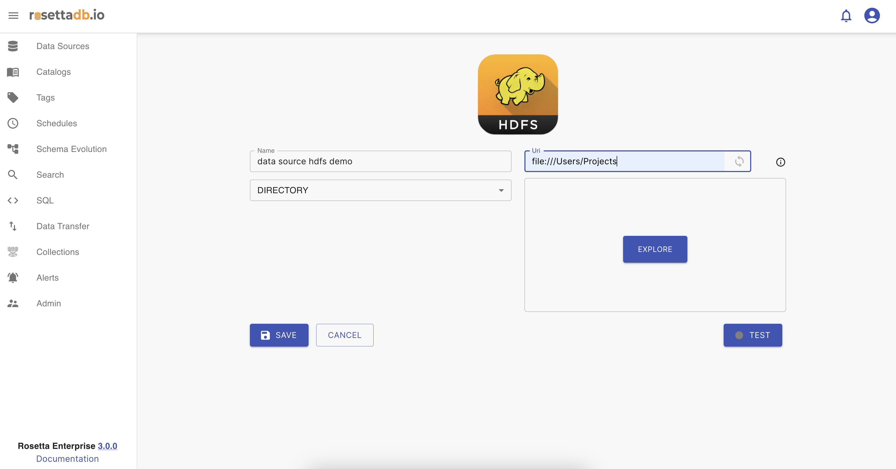
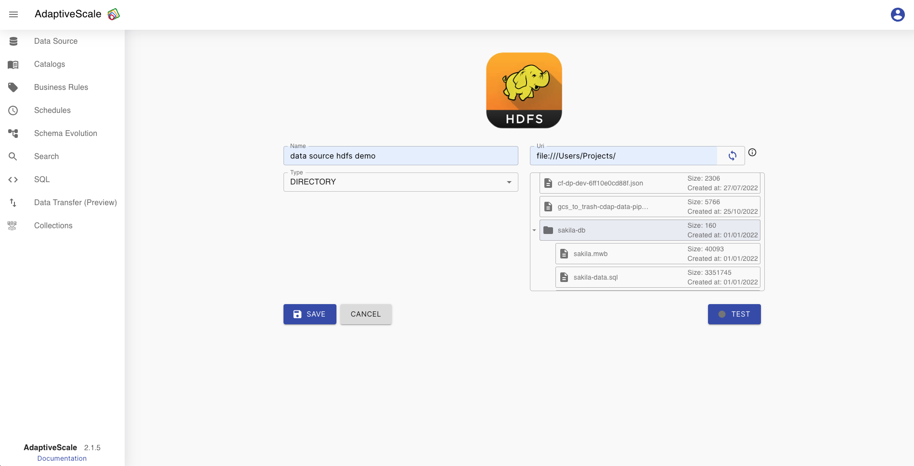
DB2 connection
If the user chooses DB2 connection type, must fill some fields such as , connection name that should be unique, a description, hostname and port, configured username and password for the data source, the driver should be uploaded and JDBC connection string should be given in a format jdbc:db2://${host}:${port}.
When the user fills all the fields the connection can be tested by clicking the button Test that will turn green if the connection is correct, and turn red if the connection is wrong.
After clicking Save button all the input is saved and the data source is ready for use.
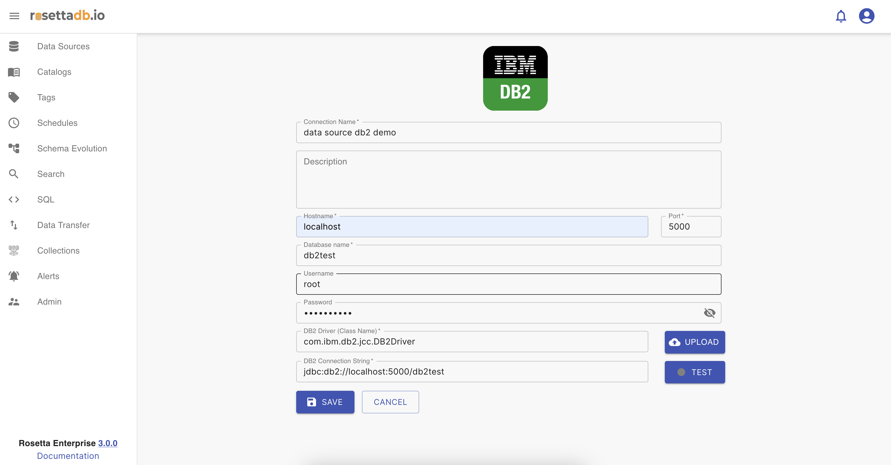
Oracle connection
If the user chooses Oracle connection type, must fill some fields such as , connection name that should be unique, a description, hostname and port, configured username and password for the data source, the driver should be uploaded and JDBC connection string should be given in a format jdbc:oracle:thin:@//${host}:${port}.
When the user fills all the fields the connection can be tested by clicking the button Test that will turn green if the connection is correct, and turn red if the connection is wrong.
After clicking Save button all the input is saved and the data source is ready for use.
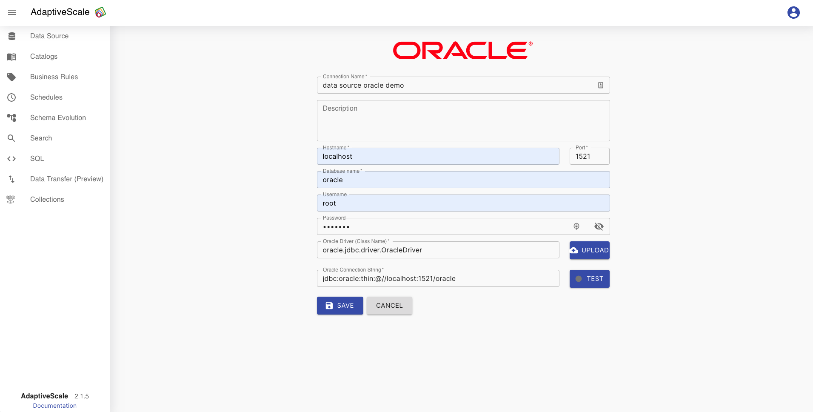
Snowflake connection
If the user chooses Snowflake connection type, must fill some fields such as , connection name that should be unique, a description, hostname and port, configured username and password for the data source, the driver should be uploaded and JDBC connection string should be given in a format jdbc:snowflake://${host}:${port}/db=dbname.
When the user fills all the fields the connection can be tested by clicking the button Test that will turn green if the connection is correct, and turn red if the connection is wrong.
After clicking Save button all the input is saved and the data source is ready for use.
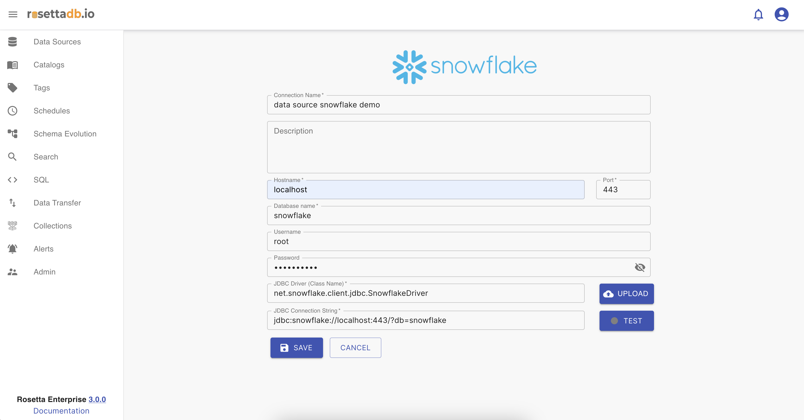
Bigquery connection
If the user chooses Bigquery connection type, must fill some fields such as , connection name that should be unique, a description, database name, the driver should be uploaded and JDBC connection string should be given in a format jdbc:bigquery://{host}[:{port}][;databaseName={database}].
When the user fills all the fields the connection can be tested by clicking the button Test that will turn green if the connection is correct, and turn red if the connection is wrong.
After clicking Save button all the input is saved and the data source is ready for use.

Microsoft SQL Server connection
If the user chooses Microsoft SQL Server connection type, must fill some fields such as , connection name that should be unique, a description, hostname and port, configured username and password for the data source, the driver should be uploaded and connection string should be given in a format jdbc:sqlserver://{host}[:{port}][databasename={database}].
When the user fills all the fields the connection can be tested by clicking the button Test that will turn green if the connection is correct, and turn red if the connection is wrong.
After clicking Save button all the input is saved and the data source is ready for use.
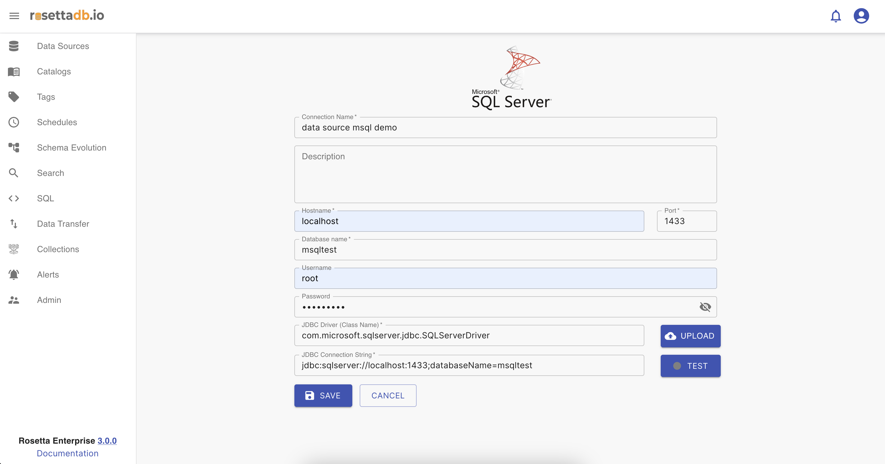
PostgreSQL connection
If the user chooses PostgreSQL connection type, must fill some fields such as , connection name that should be unique, a description, hostname and port, configured username and password for the data source, the driver should be uploaded and connection string should be given in a format jdbc:postgresql://${host}:${port}.
When the user fills all the fields the connection can be tested by clicking the button Test that will turn green if the connection is correct, and turn red if the connection is wrong.
After clicking Save button all the input is saved and the data source is ready for use.
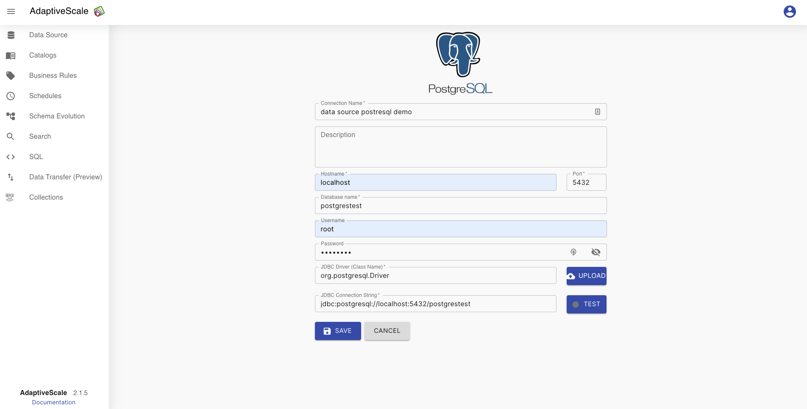
MySQL connection
If the user chooses MySQL connection type, must fill some fields such as , connection name that should be unique, a description, hostname and port, configured username and password for the data source, the driver should be uploaded and connection string should be given in a format jdbc:mysql://${host}:${port}.
When the user fills all the fields the connection can be tested by clicking the button Test that will turn green if the connection is correct, and turn red if the connection is wrong.
After clicking Save button all the input is saved and the data source is ready for use.
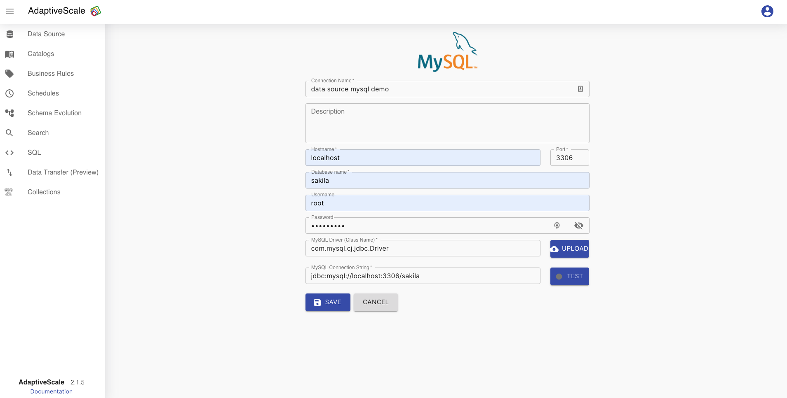
Kinetica connection
If the user chooses Kinetica connection type, must fill some fields such as , connection name that should be unique, a description, hostname and port, a database name, configured username and password for the data source, attributes such as key-value pairs can be added, the driver should be uploaded and connection string should be given in a format jdbc:kinetica:URL=http://${host}:${port}.
When the user fills all the fields the connection can be tested by clicking the button Test that will turn green if the connection is correct, and turn red if the connection is wrong.
After clicking Save button all the input is saved and the data source is ready for use.
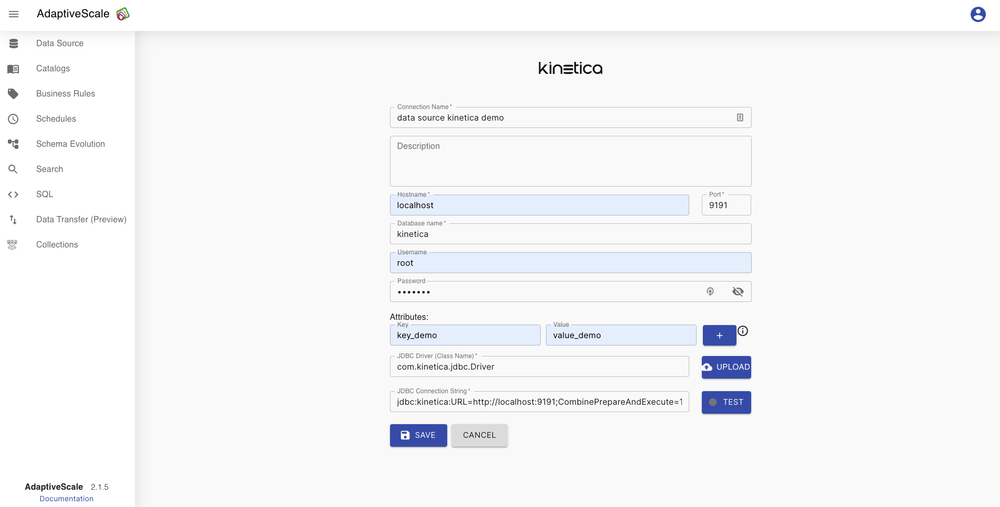
Edit a data source
Now that one data source is configured, on Data Source tab the user can see a list of the data sources and a button Add Data Source that redirects to the Data source screen for creating a new data source. The data source can be edited, deleted and searched.
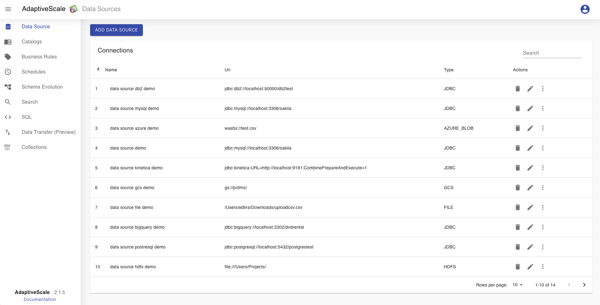
When the user clicks on the pen icon next to the data sources from the list they can edit some of the fields and save the changes.
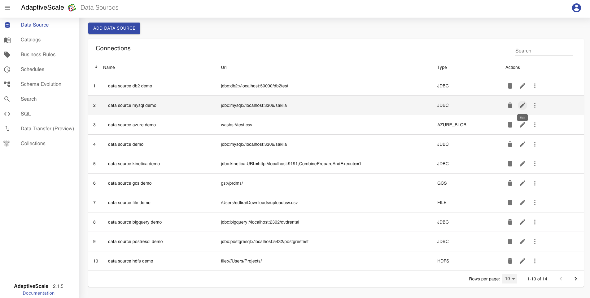
Delete a data source
The deletion of a data source is done by clicking on the bin icon.
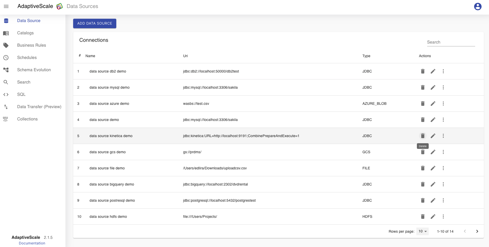
When the icon is clicked, a pop up appears with a question if the user is sure about deleting the data source, and if yes the user clicks Delete and if not clicks Cancel.
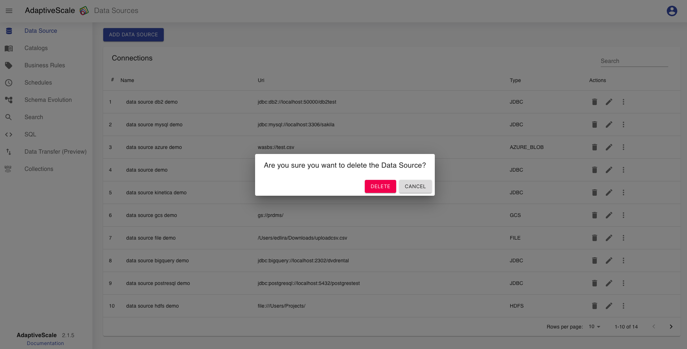
Search for a data source
The user can search for a data source from the list of data sources. The data source that we created as an example is named data source demo, so if the user searches for test there will be no results.
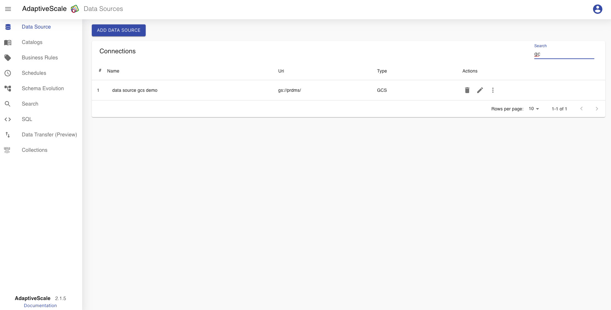